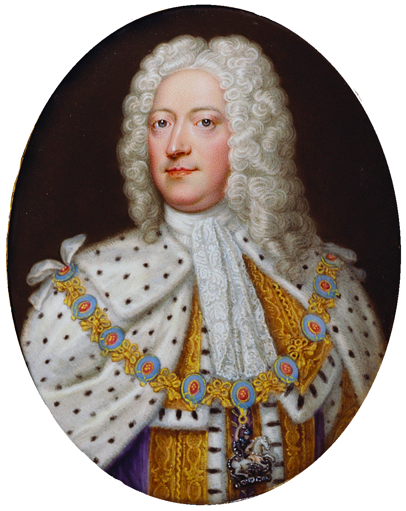
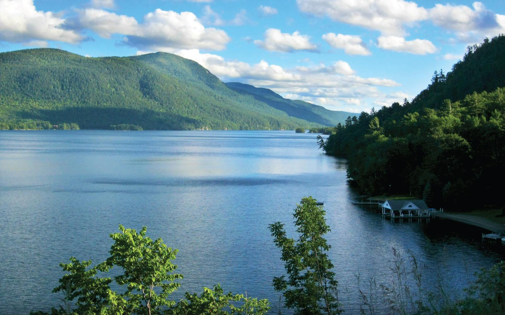

The town of Lake George was established in 1810, yet it didn't receive the name until 1962. It sits on one of the most amazing bodies of water in the world: Lake George. This lake was originally named "Andia-ta-roc-te" by the Native Americans and settled on its final name in 1755 by Sir William Johnson, who named it after King George II of England. Below is a picture of the King.
Lake George holds an incredible amount of history. It acted as a strategic battle ground for the Seven Years Wars, which is also known as the French and Indian War. Many famous figures, such as Benedict Arnold, battled on and along the shores of Lake George. Therre were at one time three forts on Lake George: Fort Gage, Fort George, and Fort William Henry. Since this time, the town, lake, and all surounding areas have grown, expanded, and developed in a truly amazing way.
If you'd like more information reagrding the history of Lake George, visit this website.
There are many things to do in Lake George, but it is primarily known for being a summer town. It has a wonderful little downtown filled with local shops and restaurants, but the main attraction is the lake itself. You can swim, boat and even camp on islands located within the lake! Below is a picture of the beautiful lake where all the action takes place!
After all the fun in the sun, visitors can get a taste of the local charm by visiting restaurants, shops and yummy dessert spots. There are many local hotels, such as the Sagamore, which you can stay at for an extended trip.